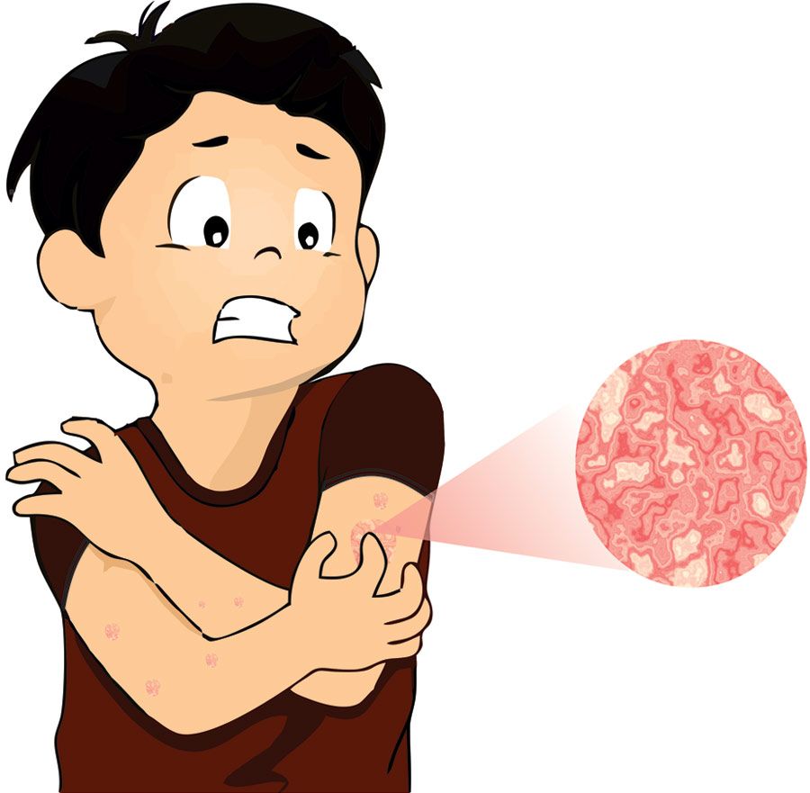

SKIN ITCHING

- Mint oil Mint oil can help relieve pain and itching.
- It cools the skin and helps to relieve itching.
- Some women have itchy skin during pregnancy.
- Use ice cream If there is an itching problem on the skin, ice cream is recommended as the best way to remove it.
- Applying an ice pack on the affected skin will reduce this itching.
- Applying ice for a few minutes on the itchy area of the skin will reduce the itching Some people say that baking soda can be applied to the skin as it will affect the pH level of the skin so some people say not to use it on the skin.
- One study on baking soda suggests that it may be used to treat fungal skin diseases.
- Mix baking soda with warm water and make a little paste.
- Applying it on the itchy area may reduce the itching.
- Also make sure that they do not affect the skin while using baking soda.
- Not only food for the stomach, but also soaps and lotions for the body are made with it.
- A 2012 study found that it is safe and can treat skin itching.
- You can use creams made with oatmeal. Or you can use oatmeal.